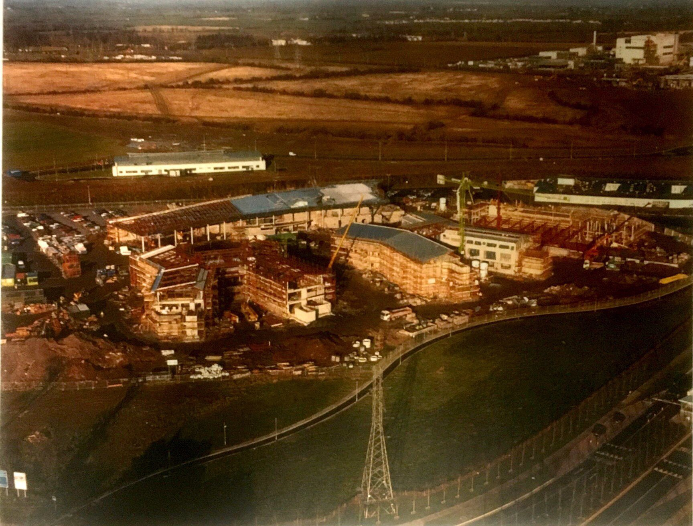
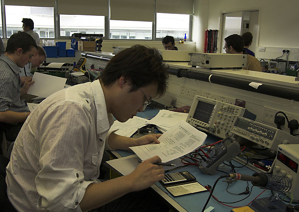
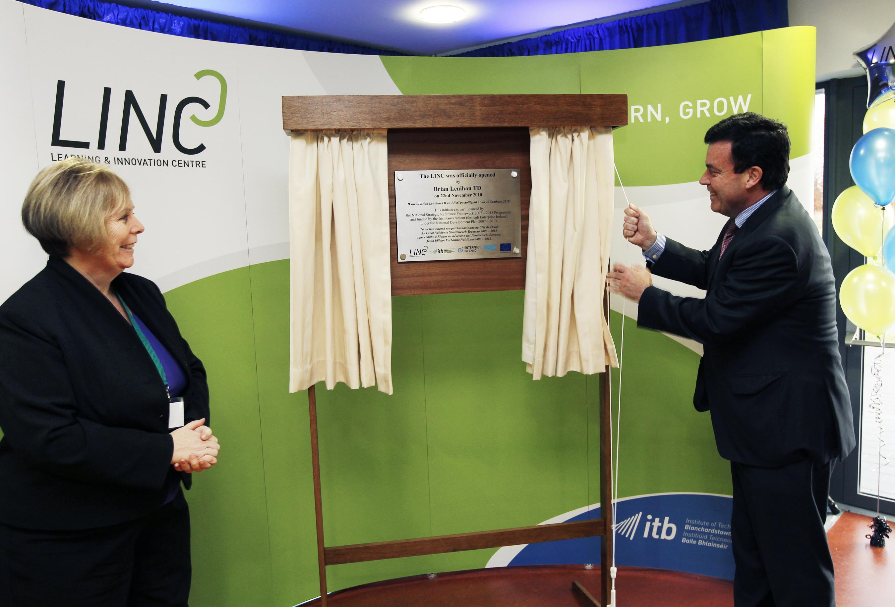
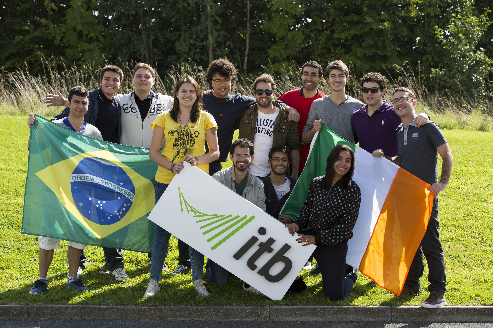

History of ITB
Since it opened in 1999 funding has been secured from:
The Technological Sector Postgraduate R&D Skills Training Programme
Enterprise Ireland's Innovation Partnership scheme where the Institute has teamed up with local companies to conduct R&D to improve processes and procedures
Enterprise Ireland’s Proof Of Concept funding which allows the development of a possible commercial activity
Enterprise Ireland’s Research Equipment grant
The Embark Initiative
The Higher Education Authority including the Resarch Funding Enhancement Scheme
Leonardo Da Vinci programs

1999
ITB through the Years

2006

2010

2014